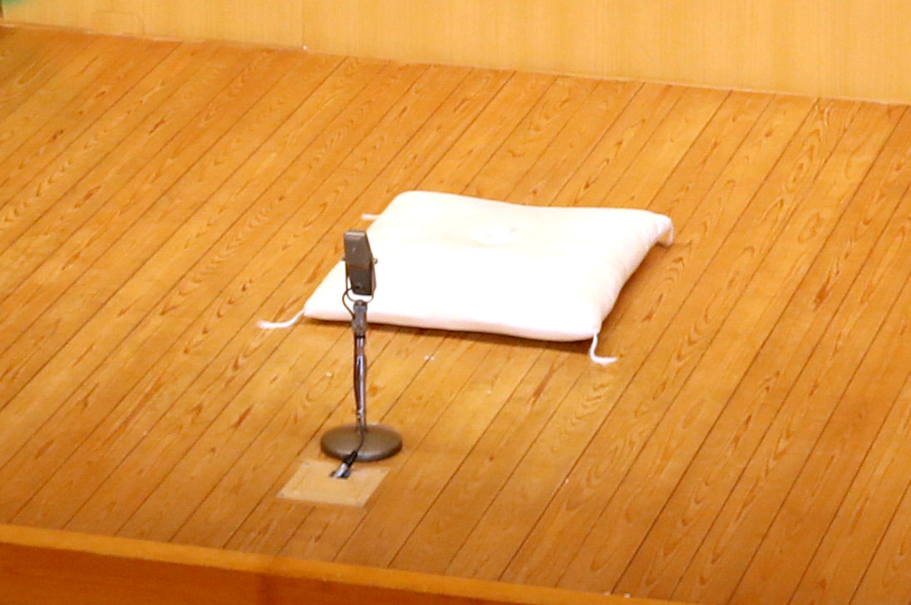
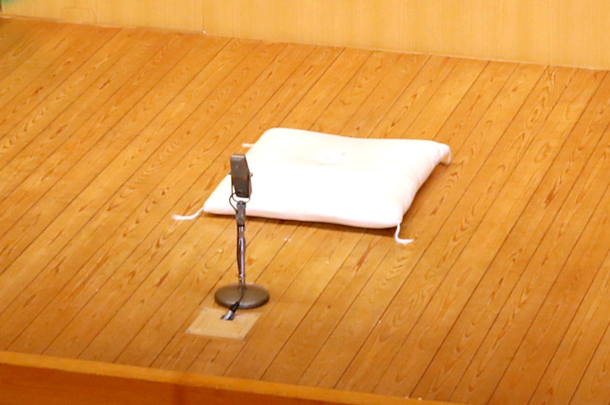

メインステージ

Gブロック 伝統芸能PJ
生放送時間：3/12 13:55~14:10
このWebサイトは、プロジェクト型学習の一環で「伝統芸能を日本の若年層へ広める」ことを目的に、N高等学校に通う全国の生徒がオンライン上のチームに分かれ約1ヶ月半かけて制作しました。
公開期間は2021/3/31 までです。期間内は何度でも閲覧可能です。これを機に、日本の伝統芸能や文化が、将来にわたってより豊かに発展し続けることを願っております。 N高等学校「プロジェクトN」関係者一同
メインステージ
